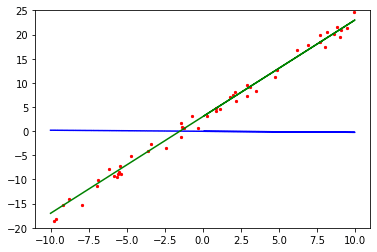

线性回归#
线性回归核心就是在x和y轴中，给出一个数x会有相对应的一个y值。我们需要得到这一个模型（通俗说：一个直线公式）。

在线性回归中，数据使用线性预测函数来建模，并且未知的模型参数也是通过数据来估计。这些模型被叫做线性模型。最常用的线性回归建模是给定X值的y的条件均值是X的仿射函数。不太一般的情况，线性回归模型可以是一个中位数或一些其他的给定X的条件下y的条件分布的分位数作为X的线性函数表示。 线性回归有很多实际用途。分为以下两大类：
如果目标是预测或者映射，线性回归可以用来对观测数据集的和X的值拟合出一个预测模型。当完成这样一个模型以后，对于一个新增的X值，在没有给定与它相配对的y的情况下，可以用这个拟合过的模型预测出一个y值。
给定一个变量y和一些变量\({\displaystyle X_{1}},...,{\displaystyle X_{p}}\)，这些变量有可能与y相关，线性回归分析可以用来量化y与Xj之间相关性的强度，评估出与y不相关的\({\displaystyle X_{j}}\)，并识别出哪些\({\displaystyle X_{j}}\)的子集包含了关于y的冗余信息。
训练的过程下图会更直观的展示
from IPython import display
import time
from mindspore.train.callback import Callback
from mindspore import Model
from mindspore import Tensor
from mindspore.common.initializer import Normal
from mindspore import nn
from mindspore import dataset as ds
import matplotlib.pyplot as plt
import numpy as np
from mindspore import context
context.set_context(mode=context.GRAPH_MODE, device_target="CPU")
def get_data(num, w=2.0, b=3.0):
for _ in range(num):
x = np.random.uniform(-10.0, 10.0)
noise = np.random.normal(0, 1)
y = x * w + b + noise
yield np.array([x]).astype(np.float32), np.array([y]).astype(np.float32)
eval_data = list(get_data(50))
x_target_label = np.array([-10, 10, 0.1])
y_target_label = x_target_label * 2 + 3
x_eval_label,y_eval_label = zip(*eval_data)
plt.scatter(x_eval_label, y_eval_label, color="red", s=5)
plt.plot(x_target_label, y_target_label, color="green")
plt.title("Eval data")
plt.show()
def create_dataset(num_data, batch_size=16, repeat_size=1):
input_data = ds.GeneratorDataset(list(get_data(num_data)), column_names=['data', 'label'])
input_data = input_data.batch(batch_size)
input_data = input_data.repeat(repeat_size)
return input_data
data_number = 1600
batch_number = 16
repeat_number = 1
ds_train = create_dataset(data_number, batch_size=batch_number, repeat_size=repeat_number)
print("The dataset size of ds_train:", ds_train.get_dataset_size())
dict_datasets = next(ds_train.create_dict_iterator())
print(dict_datasets.keys())
print("The x label value shape:", dict_datasets["data"].shape)
print("The y label value shape:", dict_datasets["label"].shape)
class LinearNet(nn.Cell):
def __init__(self):
super(LinearNet, self).__init__()
self.fc = nn.Dense(1, 1, Normal(0.02), Normal(0.02))
def construct(self, x):
x = self.fc(x)
return x
net = LinearNet()
model_params = net.trainable_params()
for param in model_params:
print(param, param.asnumpy())
x_model_label = np.array([-10, 10, 0.1])
y_model_label = (x_model_label * Tensor(model_params[0]).asnumpy()[0][0] +
Tensor(model_params[1]).asnumpy()[0])
plt.scatter(x_eval_label, y_eval_label, color="red", s=5)
plt.plot(x_model_label, y_model_label, color="blue")
plt.plot(x_target_label, y_target_label, color="green")
plt.show()
net = LinearNet()
net_loss = nn.loss.MSELoss()
opt = nn.Momentum(net.trainable_params(), learning_rate=0.005, momentum=0.9)
model = Model(net, net_loss, opt)
opt = nn.Momentum(net.trainable_params(), learning_rate=0.005, momentum=0.9)
def plot_model_and_datasets(net, eval_data):
weight = net.trainable_params()[0]
bias = net.trainable_params()[1]
x = np.arange(-10, 10, 0.1)
y = x * Tensor(weight).asnumpy()[0][0] + Tensor(bias).asnumpy()[0]
x1, y1 = zip(*eval_data)
x_target = x
y_target = x_target * 2 + 3
plt.axis([-11, 11, -20, 25])
plt.scatter(x1, y1, color="red", s=5)
plt.plot(x, y, color="blue")
plt.plot(x_target, y_target, color="green")
plt.show()
time.sleep(0.02)
class ImageShowCallback(Callback):
def __init__(self, net, eval_data):
self.net = net
self.eval_data = eval_data
def step_end(self, run_context):
plot_model_and_datasets(self.net, self.eval_data)
display.clear_output(wait=True)
epoch = 1
imageshow_cb = ImageShowCallback(net, eval_data)
model.train(epoch, ds_train, callbacks=[imageshow_cb], dataset_sink_mode=False)
plot_model_and_datasets(net, eval_data)
for param in net.trainable_params():
print(param, param.asnumpy())

%matplotlib inline
import random
import torch
from d2l import torch as d2l
生成数据集#
在下面的代码中，我们生成一个包含1000个样本的数据集， 每个样本包含从标准正态分布中采样的2个特征。 我们的合成数据集是一个矩阵\(\mathbf{X}\in \mathbb{R}^{1000 \times 2}\)。
我们使用线性模型参数\(\mathbf{w} = [2, -3.4]^\top\)、\(b = 4.2\) 和噪声项\(\epsilon\)生成数据集及其标签：
\(\epsilon\)可以视为模型预测和标签时的潜在观测误差。 在这里我们认为标准假设成立，即\(\epsilon\)服从均值为0的正态分布。 为了简化问题，我们将标准差设为0.01。
def synthetic_data(w, b, num_examples): #@save
"""生成y=Xw+b+噪声"""
#means (Tensor) – 均值（平均值）
#std (Tensor) – 标准差 https://zh.wikihow.com/%E8%AE%A1%E7%AE%97%E6%A0%87%E5%87%86%E5%B7%AE
#out (Tensor) – 可选的输出张量
X = torch.normal(0, 1, (num_examples, len(w)))
print(X)
#两个张量矩阵相乘，在PyTorch中可以通过torch.matmul函数实现
y = torch.matmul(X, w) + b
#print(y)
y += torch.normal(0, 0.01, y.shape)
#print(y)
#torch.shape 和 torch.size()
#-1表示总数所在的位置
return X, y.reshape((-1, 1))
#创建张量
true_w = torch.tensor([2, -3.4])
print(true_w)
true_b = 4.2
features, labels = synthetic_data(true_w, true_b, 1000)
tensor([ 2.0000, -3.4000])
tensor([[-0.7033, -0.3678],
[-0.1763, 0.9125],
[ 1.5376, 0.1974],
...,
[-0.1207, 1.4485],
[-1.4362, 1.2402],
[-0.2114, -1.3091]])
features中的每一行都包含一个二维数据样本， labels中的每一行都包含一维标签值（一个标量）
print('features:', features[0],'\nlabel:', labels[0])
print(features)
features: tensor([-0.7033, -0.3678])
label: tensor([4.0432])
tensor([[-0.7033, -0.3678],
[-0.1763, 0.9125],
[ 1.5376, 0.1974],
...,
[-0.1207, 1.4485],
[-1.4362, 1.2402],
[-0.2114, -1.3091]])
通过生成第二个特征features[:, 1]和labels的散点图， 可以直观观察到两者之间的线性关系。
d2l.set_figsize()
d2l.plt.scatter(features[:, (1)].detach().numpy(), labels.detach().numpy(), 1);
读取数据集#
我们定义一个data_iter函数， 该函数接收批量大小、特征矩阵和标签向量作为输入，生成大小为batch_size的小批量。 每个小批量包含一组特征和标签。
使用下面代码的时候先阅读下用法
yueld用法
直接参考 https://blog.csdn.net/mieleizhi0522/article/details/82142856/
def data_iter(batch_size, features, labels):
num_examples = len(features)
#print(num_examples)
indices = list(range(num_examples))
#print(indices)
# 这些样本是随机读取的，没有特定的顺序,打乱位置
random.shuffle(indices)
for i in range(0, num_examples, batch_size): # 从0开始每次+10进行循环到1000为止
batch_indices=indices[i: min(i + batch_size, num_examples)] # 从1000个随机样本里面开始取值，每次取值范围是[i:i+batch_size]
#print(batch_indices)
#https://blog.csdn.net/mieleizhi0522/article/details/82142856/
yield features[batch_indices], labels[batch_indices] # 这个函数表示每次features和labels都会冲上一次进行接下去,然后取值是用上面随机样本进行索引的
通常，我们利用GPU并行运算的优势，处理合理大小的“小批量”。 每个样本都可以并行地进行模型计算，且每个样本损失函数的梯度也可以被并行计算。 GPU可以在处理几百个样本时，所花费的时间不比处理一个样本时多太多。
我们直观感受一下小批量运算：读取第一个小批量数据样本并打印。 每个批量的特征维度显示批量大小和输入特征数。 同样的，批量的标签形状与batch_size相等。
batch_size = 10
for X, y in data_iter(batch_size, features, labels):
print(X, '\n', y)
break
tensor([[ 1.8272, -0.4081],
[ 0.1124, -2.7450],
[-0.0028, -1.1986],
[-1.0487, 0.9150],
[ 1.0130, 0.1639],
[-0.4033, -1.3576],
[-0.9762, -0.6395],
[ 0.8160, 1.6169],
[-1.5121, -1.3389],
[-0.5695, 1.0634]])
tensor([[ 9.2308],
[13.7822],
[ 8.2630],
[-1.0136],
[ 5.6522],
[ 8.0204],
[ 4.4354],
[ 0.3497],
[ 5.7013],
[-0.5681]])
初始化模型参数#
在下面的代码中，我们通过从均值为0、标准差为0.01的正态分布中采样随机数来初始化权重， 并将偏置初始化为0。
w = torch.normal(0, 0.01, size=(2,1), requires_grad=True)
b = torch.zeros(1, requires_grad=True)
定义模型#
我们只需计算输入特征\(\mathbf{X}\)和模型权重\(\mathbf{w}\)的矩阵-向量乘法后加上偏置\(b\)。 注意，上面的\(\mathbf{Xw}\)是一个向量，而\(b\)是一个标量。 回想一下广播机制： 当我们用一个向量加一个标量时，标量会被加到向量的每个分量上。
def linreg(X, w, b): #@save
"""线性回归模型"""
return torch.matmul(X, w) + b
定义损失函数#
因为需要计算损失函数的梯度，所以我们应该先定义损失函数。在实现中，我们需要将真实值y的形状转换为和预测值y_hat的形状相同
def squared_loss(y_hat, y): #@save
"""均方损失"""
#print(y_hat.shape)
#print(y_hat)
#真实值y的形状转换为和预测值y_hat的形状相同
return (y_hat - y.reshape(y_hat.shape)) ** 2 / 2
定义优化算法#
下面的函数实现小批量随机梯度下降更新。 该函数接受模型参数集合、学习速率和批量大小作为输入。每 一步更新的大小由学习速率lr决定。 因为我们计算的损失是一个批量样本的总和，所以我们用批量大小（batch_size） 来规范化步长，这样步长大小就不会取决于我们对批量大小的选择
def sgd(params, lr, batch_size): #@save
"""小批量随机梯度下降"""
#with 语句适用于对资源进行访问的场合，确保不管使用过程中是否发生异常都会执行必要的“清理”操作，释放资源，比如文件使用后自动关闭／线程中锁的自动获取和释放等。
# no_grad用来关闭梯度计算
with torch.no_grad():
for param in params:
param -= lr * param.grad / batch_size
#需要清理梯度值不然会累加
param.grad.zero_()
训练#
现在我们已经准备好了模型训练所有需要的要素，可以实现主要的训练过程部分了。
理解这段代码至关重要，因为从事深度学习后，
相同的训练过程几乎一遍又一遍地出现。
在每次迭代中，我们读取一小批量训练样本，并通过我们的模型来获得一组预测。
计算完损失后，我们开始反向传播，存储每个参数的梯度。
最后，我们调用优化算法sgd来更新模型参数。
概括一下，我们将执行以下循环：
初始化参数
重复以下训练，直到完成
计算梯度\(\mathbf{g} \leftarrow \partial_{(\mathbf{w},b)} \frac{1}{|\mathcal{B}|} \sum_{i \in \mathcal{B}} l(\mathbf{x}^{(i)}, y^{(i)}, \mathbf{w}, b)\)
更新参数\((\mathbf{w}, b) \leftarrow (\mathbf{w}, b) - \eta \mathbf{g}\)
在每个迭代周期（epoch）中，我们使用data_iter函数遍历整个数据集，
并将训练数据集中所有样本都使用一次（假设样本数能够被批量大小整除）。
这里的迭代周期个数num_epochs和学习率lr都是超参数，分别设为3和0.03。
设置超参数很棘手，需要通过反复试验进行调整。
lr = 0.03
num_epochs = 3
net = linreg
loss = squared_loss
for epoch in range(num_epochs):
for X, y in data_iter(batch_size, features, labels):
# print(X)
# print(y)
# print(X.shape)
# print(y.shape)
l = loss(net(X, w, b), y) # X和y的小批量损失
# 因为l形状是(batch_size,1)，而不是一个标量。l中的所有元素被加到一起，
# 并以此计算关于[w,b]的梯度
c=l.sum() #这个值可以很直观的反映出逐渐下降
print(c)
c.backward()
sgd([w, b], lr, batch_size) # 使用参数的梯度更新参数,学习率lr是0.03
with torch.no_grad():
train_l = loss(net(features, w, b), labels)
print(f'epoch {epoch + 1}, loss {float(train_l.mean()):f}')
tensor(219.7428, grad_fn=<SumBackward0>)
tensor(171.0008, grad_fn=<SumBackward0>)
tensor(164.1553, grad_fn=<SumBackward0>)
tensor(81.2731, grad_fn=<SumBackward0>)
tensor(63.9693, grad_fn=<SumBackward0>)
tensor(84.7378, grad_fn=<SumBackward0>)
tensor(83.1235, grad_fn=<SumBackward0>)
tensor(137.1245, grad_fn=<SumBackward0>)
tensor(58.5734, grad_fn=<SumBackward0>)
tensor(133.2086, grad_fn=<SumBackward0>)
tensor(54.9278, grad_fn=<SumBackward0>)
tensor(161.7597, grad_fn=<SumBackward0>)
tensor(79.2266, grad_fn=<SumBackward0>)
tensor(107.2673, grad_fn=<SumBackward0>)
tensor(98.9912, grad_fn=<SumBackward0>)
tensor(51.8986, grad_fn=<SumBackward0>)
tensor(67.9640, grad_fn=<SumBackward0>)
tensor(30.9960, grad_fn=<SumBackward0>)
tensor(37.8101, grad_fn=<SumBackward0>)
tensor(58.1363, grad_fn=<SumBackward0>)
tensor(61.2214, grad_fn=<SumBackward0>)
tensor(34.7286, grad_fn=<SumBackward0>)
tensor(40.6367, grad_fn=<SumBackward0>)
tensor(40.0239, grad_fn=<SumBackward0>)
tensor(38.1985, grad_fn=<SumBackward0>)
tensor(37.1053, grad_fn=<SumBackward0>)
tensor(38.0868, grad_fn=<SumBackward0>)
tensor(17.6627, grad_fn=<SumBackward0>)
tensor(8.3271, grad_fn=<SumBackward0>)
tensor(27.9562, grad_fn=<SumBackward0>)
tensor(59.7221, grad_fn=<SumBackward0>)
tensor(31.2653, grad_fn=<SumBackward0>)
tensor(18.4773, grad_fn=<SumBackward0>)
tensor(21.6346, grad_fn=<SumBackward0>)
tensor(22.1672, grad_fn=<SumBackward0>)
tensor(35.9429, grad_fn=<SumBackward0>)
tensor(19.1514, grad_fn=<SumBackward0>)
tensor(25.4608, grad_fn=<SumBackward0>)
tensor(10.3331, grad_fn=<SumBackward0>)
tensor(31.0788, grad_fn=<SumBackward0>)
tensor(18.3255, grad_fn=<SumBackward0>)
tensor(12.8836, grad_fn=<SumBackward0>)
tensor(21.4356, grad_fn=<SumBackward0>)
tensor(12.8359, grad_fn=<SumBackward0>)
tensor(13.2695, grad_fn=<SumBackward0>)
tensor(7.5084, grad_fn=<SumBackward0>)
tensor(7.5324, grad_fn=<SumBackward0>)
tensor(6.8277, grad_fn=<SumBackward0>)
tensor(4.6790, grad_fn=<SumBackward0>)
tensor(10.8077, grad_fn=<SumBackward0>)
tensor(4.8672, grad_fn=<SumBackward0>)
tensor(5.3111, grad_fn=<SumBackward0>)
tensor(6.3366, grad_fn=<SumBackward0>)
tensor(7.7189, grad_fn=<SumBackward0>)
tensor(2.9174, grad_fn=<SumBackward0>)
tensor(5.1724, grad_fn=<SumBackward0>)
tensor(7.1049, grad_fn=<SumBackward0>)
tensor(6.1739, grad_fn=<SumBackward0>)
tensor(4.1656, grad_fn=<SumBackward0>)
tensor(1.2835, grad_fn=<SumBackward0>)
tensor(5.5859, grad_fn=<SumBackward0>)
tensor(2.4795, grad_fn=<SumBackward0>)
tensor(4.0255, grad_fn=<SumBackward0>)
tensor(4.0407, grad_fn=<SumBackward0>)
tensor(2.3990, grad_fn=<SumBackward0>)
tensor(3.1100, grad_fn=<SumBackward0>)
tensor(2.9380, grad_fn=<SumBackward0>)
tensor(4.5093, grad_fn=<SumBackward0>)
tensor(3.1672, grad_fn=<SumBackward0>)
tensor(4.2367, grad_fn=<SumBackward0>)
tensor(1.1012, grad_fn=<SumBackward0>)
tensor(1.4297, grad_fn=<SumBackward0>)
tensor(2.7318, grad_fn=<SumBackward0>)
tensor(1.7382, grad_fn=<SumBackward0>)
tensor(2.0307, grad_fn=<SumBackward0>)
tensor(2.1883, grad_fn=<SumBackward0>)
tensor(2.8105, grad_fn=<SumBackward0>)
tensor(1.5196, grad_fn=<SumBackward0>)
tensor(3.0029, grad_fn=<SumBackward0>)
tensor(1.3208, grad_fn=<SumBackward0>)
tensor(1.8580, grad_fn=<SumBackward0>)
tensor(1.9280, grad_fn=<SumBackward0>)
tensor(1.8423, grad_fn=<SumBackward0>)
tensor(0.7315, grad_fn=<SumBackward0>)
tensor(1.0957, grad_fn=<SumBackward0>)
tensor(0.6522, grad_fn=<SumBackward0>)
tensor(1.6895, grad_fn=<SumBackward0>)
tensor(0.4618, grad_fn=<SumBackward0>)
tensor(0.4552, grad_fn=<SumBackward0>)
tensor(1.1834, grad_fn=<SumBackward0>)
tensor(0.4658, grad_fn=<SumBackward0>)
tensor(0.8856, grad_fn=<SumBackward0>)
tensor(0.4419, grad_fn=<SumBackward0>)
tensor(0.7618, grad_fn=<SumBackward0>)
tensor(0.2927, grad_fn=<SumBackward0>)
tensor(0.5918, grad_fn=<SumBackward0>)
tensor(0.5064, grad_fn=<SumBackward0>)
tensor(0.6102, grad_fn=<SumBackward0>)
tensor(0.2841, grad_fn=<SumBackward0>)
tensor(0.7643, grad_fn=<SumBackward0>)
epoch 1, loss 0.044228
tensor(0.2525, grad_fn=<SumBackward0>)
tensor(0.6709, grad_fn=<SumBackward0>)
tensor(0.5155, grad_fn=<SumBackward0>)
tensor(0.4780, grad_fn=<SumBackward0>)
tensor(0.1644, grad_fn=<SumBackward0>)
tensor(0.3520, grad_fn=<SumBackward0>)
tensor(0.1977, grad_fn=<SumBackward0>)
tensor(0.1068, grad_fn=<SumBackward0>)
tensor(0.2556, grad_fn=<SumBackward0>)
tensor(0.1902, grad_fn=<SumBackward0>)
tensor(0.2153, grad_fn=<SumBackward0>)
tensor(0.2857, grad_fn=<SumBackward0>)
tensor(0.2223, grad_fn=<SumBackward0>)
tensor(0.1705, grad_fn=<SumBackward0>)
tensor(0.1991, grad_fn=<SumBackward0>)
tensor(0.0382, grad_fn=<SumBackward0>)
tensor(0.2031, grad_fn=<SumBackward0>)
tensor(0.2424, grad_fn=<SumBackward0>)
tensor(0.0990, grad_fn=<SumBackward0>)
tensor(0.1317, grad_fn=<SumBackward0>)
tensor(0.1251, grad_fn=<SumBackward0>)
tensor(0.1036, grad_fn=<SumBackward0>)
tensor(0.2379, grad_fn=<SumBackward0>)
tensor(0.2091, grad_fn=<SumBackward0>)
tensor(0.1327, grad_fn=<SumBackward0>)
tensor(0.1559, grad_fn=<SumBackward0>)
tensor(0.1547, grad_fn=<SumBackward0>)
tensor(0.1298, grad_fn=<SumBackward0>)
tensor(0.0890, grad_fn=<SumBackward0>)
tensor(0.0570, grad_fn=<SumBackward0>)
tensor(0.0831, grad_fn=<SumBackward0>)
tensor(0.0661, grad_fn=<SumBackward0>)
tensor(0.0805, grad_fn=<SumBackward0>)
tensor(0.0436, grad_fn=<SumBackward0>)
tensor(0.0914, grad_fn=<SumBackward0>)
tensor(0.0721, grad_fn=<SumBackward0>)
tensor(0.0752, grad_fn=<SumBackward0>)
tensor(0.1003, grad_fn=<SumBackward0>)
tensor(0.0472, grad_fn=<SumBackward0>)
tensor(0.0589, grad_fn=<SumBackward0>)
tensor(0.0563, grad_fn=<SumBackward0>)
tensor(0.0120, grad_fn=<SumBackward0>)
tensor(0.0398, grad_fn=<SumBackward0>)
tensor(0.0374, grad_fn=<SumBackward0>)
tensor(0.0366, grad_fn=<SumBackward0>)
tensor(0.0322, grad_fn=<SumBackward0>)
tensor(0.0218, grad_fn=<SumBackward0>)
tensor(0.0332, grad_fn=<SumBackward0>)
tensor(0.0122, grad_fn=<SumBackward0>)
tensor(0.0297, grad_fn=<SumBackward0>)
tensor(0.0163, grad_fn=<SumBackward0>)
tensor(0.0312, grad_fn=<SumBackward0>)
tensor(0.0241, grad_fn=<SumBackward0>)
tensor(0.0324, grad_fn=<SumBackward0>)
tensor(0.0263, grad_fn=<SumBackward0>)
tensor(0.0214, grad_fn=<SumBackward0>)
tensor(0.0128, grad_fn=<SumBackward0>)
tensor(0.0102, grad_fn=<SumBackward0>)
tensor(0.0209, grad_fn=<SumBackward0>)
tensor(0.0107, grad_fn=<SumBackward0>)
tensor(0.0133, grad_fn=<SumBackward0>)
tensor(0.0071, grad_fn=<SumBackward0>)
tensor(0.0084, grad_fn=<SumBackward0>)
tensor(0.0091, grad_fn=<SumBackward0>)
tensor(0.0067, grad_fn=<SumBackward0>)
tensor(0.0072, grad_fn=<SumBackward0>)
tensor(0.0100, grad_fn=<SumBackward0>)
tensor(0.0122, grad_fn=<SumBackward0>)
tensor(0.0046, grad_fn=<SumBackward0>)
tensor(0.0113, grad_fn=<SumBackward0>)
tensor(0.0126, grad_fn=<SumBackward0>)
tensor(0.0038, grad_fn=<SumBackward0>)
tensor(0.0082, grad_fn=<SumBackward0>)
tensor(0.0030, grad_fn=<SumBackward0>)
tensor(0.0037, grad_fn=<SumBackward0>)
tensor(0.0048, grad_fn=<SumBackward0>)
tensor(0.0042, grad_fn=<SumBackward0>)
tensor(0.0058, grad_fn=<SumBackward0>)
tensor(0.0028, grad_fn=<SumBackward0>)
tensor(0.0068, grad_fn=<SumBackward0>)
tensor(0.0039, grad_fn=<SumBackward0>)
tensor(0.0036, grad_fn=<SumBackward0>)
tensor(0.0024, grad_fn=<SumBackward0>)
tensor(0.0038, grad_fn=<SumBackward0>)
tensor(0.0028, grad_fn=<SumBackward0>)
tensor(0.0049, grad_fn=<SumBackward0>)
tensor(0.0055, grad_fn=<SumBackward0>)
tensor(0.0031, grad_fn=<SumBackward0>)
tensor(0.0026, grad_fn=<SumBackward0>)
tensor(0.0020, grad_fn=<SumBackward0>)
tensor(0.0050, grad_fn=<SumBackward0>)
tensor(0.0021, grad_fn=<SumBackward0>)
tensor(0.0009, grad_fn=<SumBackward0>)
tensor(0.0024, grad_fn=<SumBackward0>)
tensor(0.0032, grad_fn=<SumBackward0>)
tensor(0.0024, grad_fn=<SumBackward0>)
tensor(0.0009, grad_fn=<SumBackward0>)
tensor(0.0013, grad_fn=<SumBackward0>)
tensor(0.0010, grad_fn=<SumBackward0>)
tensor(0.0018, grad_fn=<SumBackward0>)
epoch 2, loss 0.000175
tensor(0.0018, grad_fn=<SumBackward0>)
tensor(0.0019, grad_fn=<SumBackward0>)
tensor(0.0017, grad_fn=<SumBackward0>)
tensor(0.0016, grad_fn=<SumBackward0>)
tensor(0.0013, grad_fn=<SumBackward0>)
tensor(0.0012, grad_fn=<SumBackward0>)
tensor(0.0010, grad_fn=<SumBackward0>)
tensor(0.0019, grad_fn=<SumBackward0>)
tensor(0.0014, grad_fn=<SumBackward0>)
tensor(0.0017, grad_fn=<SumBackward0>)
tensor(0.0007, grad_fn=<SumBackward0>)
tensor(0.0012, grad_fn=<SumBackward0>)
tensor(0.0007, grad_fn=<SumBackward0>)
tensor(0.0010, grad_fn=<SumBackward0>)
tensor(0.0015, grad_fn=<SumBackward0>)
tensor(0.0007, grad_fn=<SumBackward0>)
tensor(0.0020, grad_fn=<SumBackward0>)
tensor(0.0007, grad_fn=<SumBackward0>)
tensor(0.0004, grad_fn=<SumBackward0>)
tensor(0.0010, grad_fn=<SumBackward0>)
tensor(0.0004, grad_fn=<SumBackward0>)
tensor(0.0004, grad_fn=<SumBackward0>)
tensor(0.0005, grad_fn=<SumBackward0>)
tensor(0.0012, grad_fn=<SumBackward0>)
tensor(0.0004, grad_fn=<SumBackward0>)
tensor(0.0007, grad_fn=<SumBackward0>)
tensor(0.0008, grad_fn=<SumBackward0>)
tensor(0.0003, grad_fn=<SumBackward0>)
tensor(0.0006, grad_fn=<SumBackward0>)
tensor(0.0012, grad_fn=<SumBackward0>)
tensor(0.0010, grad_fn=<SumBackward0>)
tensor(0.0009, grad_fn=<SumBackward0>)
tensor(0.0002, grad_fn=<SumBackward0>)
tensor(0.0003, grad_fn=<SumBackward0>)
tensor(0.0008, grad_fn=<SumBackward0>)
tensor(0.0006, grad_fn=<SumBackward0>)
tensor(0.0006, grad_fn=<SumBackward0>)
tensor(0.0011, grad_fn=<SumBackward0>)
tensor(0.0011, grad_fn=<SumBackward0>)
tensor(0.0005, grad_fn=<SumBackward0>)
tensor(0.0004, grad_fn=<SumBackward0>)
tensor(0.0005, grad_fn=<SumBackward0>)
tensor(0.0005, grad_fn=<SumBackward0>)
tensor(0.0008, grad_fn=<SumBackward0>)
tensor(0.0005, grad_fn=<SumBackward0>)
tensor(0.0004, grad_fn=<SumBackward0>)
tensor(0.0003, grad_fn=<SumBackward0>)
tensor(0.0012, grad_fn=<SumBackward0>)
tensor(0.0002, grad_fn=<SumBackward0>)
tensor(0.0001, grad_fn=<SumBackward0>)
tensor(0.0008, grad_fn=<SumBackward0>)
tensor(0.0004, grad_fn=<SumBackward0>)
tensor(0.0005, grad_fn=<SumBackward0>)
tensor(0.0006, grad_fn=<SumBackward0>)
tensor(0.0002, grad_fn=<SumBackward0>)
tensor(0.0007, grad_fn=<SumBackward0>)
tensor(0.0006, grad_fn=<SumBackward0>)
tensor(0.0003, grad_fn=<SumBackward0>)
tensor(0.0012, grad_fn=<SumBackward0>)
tensor(0.0007, grad_fn=<SumBackward0>)
tensor(0.0003, grad_fn=<SumBackward0>)
tensor(0.0004, grad_fn=<SumBackward0>)
tensor(0.0004, grad_fn=<SumBackward0>)
tensor(0.0003, grad_fn=<SumBackward0>)
tensor(0.0014, grad_fn=<SumBackward0>)
tensor(0.0004, grad_fn=<SumBackward0>)
tensor(0.0007, grad_fn=<SumBackward0>)
tensor(0.0004, grad_fn=<SumBackward0>)
tensor(0.0005, grad_fn=<SumBackward0>)
tensor(0.0006, grad_fn=<SumBackward0>)
tensor(0.0010, grad_fn=<SumBackward0>)
tensor(0.0004, grad_fn=<SumBackward0>)
tensor(0.0007, grad_fn=<SumBackward0>)
tensor(0.0005, grad_fn=<SumBackward0>)
tensor(0.0007, grad_fn=<SumBackward0>)
tensor(0.0006, grad_fn=<SumBackward0>)
tensor(0.0003, grad_fn=<SumBackward0>)
tensor(0.0007, grad_fn=<SumBackward0>)
tensor(0.0003, grad_fn=<SumBackward0>)
tensor(0.0002, grad_fn=<SumBackward0>)
tensor(0.0001, grad_fn=<SumBackward0>)
tensor(0.0004, grad_fn=<SumBackward0>)
tensor(0.0003, grad_fn=<SumBackward0>)
tensor(0.0002, grad_fn=<SumBackward0>)
tensor(0.0002, grad_fn=<SumBackward0>)
tensor(0.0008, grad_fn=<SumBackward0>)
tensor(0.0007, grad_fn=<SumBackward0>)
tensor(0.0005, grad_fn=<SumBackward0>)
tensor(0.0007, grad_fn=<SumBackward0>)
tensor(0.0003, grad_fn=<SumBackward0>)
tensor(0.0007, grad_fn=<SumBackward0>)
tensor(0.0006, grad_fn=<SumBackward0>)
tensor(0.0005, grad_fn=<SumBackward0>)
tensor(0.0007, grad_fn=<SumBackward0>)
tensor(0.0006, grad_fn=<SumBackward0>)
tensor(0.0004, grad_fn=<SumBackward0>)
tensor(0.0009, grad_fn=<SumBackward0>)
tensor(0.0003, grad_fn=<SumBackward0>)
tensor(0.0003, grad_fn=<SumBackward0>)
tensor(0.0005, grad_fn=<SumBackward0>)
epoch 3, loss 0.000048
因为我们使用的是自己合成的数据集，所以我们知道真正的参数是什么。 因此，我们可以通过比较真实参数和通过训练学到的参数来评估训练的成功程度。 事实上，真实参数和通过训练学到的参数确实非常接近。
print(f'w的估计误差: {true_w - w.reshape(true_w.shape)}')
print(f'b的估计误差: {true_b - b}')
w的估计误差: tensor([ 0.0002, -0.0002], grad_fn=<SubBackward0>)
b的估计误差: tensor([-4.1008e-05], grad_fn=<RsubBackward1>)
完整代码#
import random
import torch
from d2l import torch as d2l
def synthetic_data(w, b, num_examples): #@save
"""生成y=Xw+b+噪声"""
X = torch.normal(0, 1, (num_examples, len(w)))
y = torch.matmul(X, w) + b
y += torch.normal(0, 0.01, y.shape)
return X, y.reshape((-1, 1))
true_w = torch.tensor([2, -3.4])
true_b = 4.2
features, labels = synthetic_data(true_w, true_b, 1000) #生成特征和标签
def data_iter(batch_size, features, labels):
num_examples = len(features)
indices = list(range(num_examples))
# 这些样本是随机读取的，没有特定的顺序
random.shuffle(indices)
print(indices)
for i in range(0, num_examples, batch_size): #从0开始每次+10进行循环到1000为止
batch_indices = torch.tensor(indices[i: min(i + batch_size, num_examples)]) # 从1000个随机样本里面开始取值，每次取值范围是[i:i+batch_size]
#print(batch_indices)
yield features[batch_indices], labels[batch_indices] #这个函数表示每次features和labels都会冲上一次进行接下去,然后取值是用上面随机样本进行索引的
w = torch.normal(0, 0.01, size=(2,1), requires_grad=True)
b = torch.zeros(1, requires_grad=True)
def linreg(X, w, b): #@save
"""线性回归模型"""
return torch.matmul(X, w) + b
def squared_loss(y_hat, y): #@save
"""均方损失"""
#查看算出来的值和原来的标签比损失多少
return (y_hat - y.reshape(y_hat.shape)) ** 2 / 2
def sgd(params, lr, batch_size): #@save
"""小批量随机梯度下降"""
with torch.no_grad():
for param in params: #先更新w然后更新b
param -= lr * param.grad / batch_size
param.grad.zero_()
for epoch in range(3):
for X, y in data_iter(10, features, labels):
# print(X)
# print(y)
# print(X.shape)
# print(y.shape)
l = squared_loss(linreg(X, w, b), y) # X和y的小批量损失
# 因为l形状是(batch_size,1)，而不是一个标量。l中的所有元素被加到一起，
# 并以此计算关于[w,b]的梯度
c=l.sum() #这个值可以很直观的反映出逐渐下降
print(c)
c.backward()
sgd([w, b], 0.03, 10) # 使用参数的梯度更新参数，学习率lr是0.03
with torch.no_grad():
train_l = squared_loss(linreg(features, w, b), labels)
print(f'epoch {epoch + 1}, loss {float(train_l.mean()):f}')
print(f'w的估计误差: {true_w - w.reshape(true_w.shape)}')
print(f'b的估计误差: {true_b - b}')
[113, 592, 214, 899, 547, 253, 720, 275, 766, 410, 966, 2, 704, 666, 817, 365, 81, 904, 418, 534, 126, 862, 980, 638, 710, 719, 756, 217, 837, 974, 139, 141, 335, 949, 659, 811, 936, 174, 959, 114, 554, 532, 556, 683, 475, 857, 328, 764, 931, 894, 578, 396, 935, 295, 325, 928, 372, 504, 8, 272, 606, 430, 381, 391, 227, 873, 277, 449, 210, 57, 472, 893, 855, 852, 176, 353, 772, 522, 658, 496, 577, 742, 628, 868, 645, 198, 768, 231, 957, 49, 304, 366, 53, 329, 773, 241, 455, 938, 175, 193, 596, 695, 73, 398, 43, 788, 273, 247, 19, 220, 903, 65, 861, 736, 874, 94, 426, 357, 913, 405, 780, 347, 786, 95, 78, 917, 160, 21, 256, 79, 484, 552, 571, 280, 677, 485, 142, 428, 36, 738, 462, 691, 290, 971, 993, 166, 476, 653, 162, 124, 853, 314, 310, 324, 920, 754, 701, 680, 889, 901, 144, 946, 423, 345, 343, 0, 705, 87, 364, 477, 224, 858, 600, 888, 725, 411, 882, 860, 221, 922, 442, 541, 306, 713, 459, 138, 633, 367, 681, 404, 105, 108, 243, 132, 623, 529, 466, 154, 716, 209, 816, 676, 479, 453, 793, 10, 977, 148, 473, 813, 181, 222, 940, 112, 941, 992, 937, 821, 965, 753, 434, 727, 359, 276, 884, 202, 67, 394, 28, 544, 618, 579, 386, 989, 987, 599, 3, 752, 914, 688, 22, 866, 523, 417, 611, 834, 603, 559, 512, 749, 136, 650, 731, 282, 269, 56, 340, 607, 421, 435, 240, 145, 294, 408, 45, 514, 511, 143, 881, 503, 317, 111, 646, 258, 582, 513, 76, 6, 134, 807, 530, 42, 576, 517, 636, 673, 775, 803, 244, 870, 741, 757, 177, 721, 537, 700, 298, 283, 585, 248, 234, 573, 452, 200, 242, 24, 339, 679, 561, 678, 686, 416, 157, 508, 92, 447, 750, 474, 674, 982, 898, 841, 663, 624, 670, 380, 225, 848, 770, 259, 543, 769, 191, 555, 822, 201, 250, 323, 384, 271, 620, 581, 360, 693, 211, 195, 732, 781, 173, 845, 91, 167, 787, 107, 376, 106, 331, 763, 13, 172, 86, 336, 383, 519, 847, 315, 117, 164, 332, 228, 947, 703, 180, 699, 748, 706, 187, 690, 631, 226, 694, 647, 123, 551, 318, 26, 525, 12, 915, 341, 481, 327, 215, 312, 35, 64, 950, 25, 178, 526, 468, 649, 501, 652, 207, 785, 614, 333, 597, 75, 548, 263, 267, 223, 61, 605, 830, 729, 602, 401, 464, 587, 52, 156, 363, 970, 491, 208, 998, 808, 839, 260, 921, 471, 730, 235, 712, 843, 29, 612, 724, 7, 891, 672, 722, 254, 89, 755, 308, 344, 436, 795, 697, 796, 33, 983, 11, 444, 572, 644, 320, 415, 583, 827, 619, 657, 832, 213, 299, 991, 535, 910, 186, 266, 390, 969, 374, 564, 540, 34, 115, 182, 682, 378, 163, 558, 369, 93, 419, 685, 179, 116, 169, 133, 387, 734, 635, 897, 120, 104, 4, 642, 262, 140, 963, 783, 433, 377, 204, 422, 348, 350, 916, 621, 616, 875, 192, 40, 895, 656, 279, 206, 185, 878, 199, 994, 257, 972, 617, 692, 553, 305, 906, 911, 925, 152, 32, 829, 538, 379, 709, 482, 41, 17, 667, 598, 939, 777, 128, 745, 760, 264, 373, 805, 486, 850, 50, 877, 149, 639, 735, 370, 664, 99, 696, 20, 728, 791, 109, 361, 715, 454, 825, 539, 629, 467, 9, 954, 509, 183, 88, 130, 18, 97, 47, 588, 986, 953, 711, 740, 77, 806, 933, 441, 767, 708, 919, 926, 316, 747, 967, 968, 287, 869, 146, 406, 661, 334, 608, 322, 291, 759, 301, 285, 580, 718, 83, 975, 205, 407, 952, 546, 520, 801, 944, 302, 338, 930, 255, 216, 188, 671, 229, 30, 354, 135, 660, 171, 96, 168, 458, 490, 23, 388, 487, 402, 702, 385, 927, 956, 562, 575, 761, 237, 16, 281, 497, 239, 818, 996, 668, 591, 789, 524, 651, 194, 948, 297, 887, 640, 400, 62, 100, 44, 68, 726, 349, 929, 835, 499, 896, 245, 59, 883, 880, 80, 451, 110, 942, 958, 270, 851, 560, 480, 533, 794, 39, 122, 342, 5, 461, 493, 762, 684, 48, 779, 66, 74, 489, 549, 37, 448, 389, 814, 431, 723, 902, 782, 909, 432, 981, 854, 289, 55, 912, 714, 826, 908, 82, 610, 584, 495, 831, 717, 457, 510, 665, 978, 420, 973, 819, 871, 594, 988, 63, 856, 951, 979, 823, 15, 625, 397, 129, 615, 609, 438, 999, 802, 528, 303, 127, 570, 403, 567, 797, 150, 507, 872, 118, 707, 990, 641, 798, 368, 184, 890, 964, 125, 790, 358, 155, 863, 252, 565, 515, 330, 568, 746, 326, 69, 151, 249, 492, 161, 918, 355, 932, 189, 238, 828, 346, 300, 765, 840, 698, 409, 739, 550, 219, 159, 31, 392, 469, 412, 51, 776, 307, 737, 351, 654, 284, 424, 689, 147, 824, 774, 165, 131, 170, 60, 876, 502, 536, 527, 836, 103, 985, 643, 72, 429, 311, 101, 261, 566, 98, 488, 85, 563, 844, 995, 574, 634, 321, 669, 545, 849, 233, 675, 892, 630, 352, 286, 445, 810, 196, 622, 319, 601, 71, 46, 531, 356, 815, 865, 382, 900, 137, 733, 190, 934, 879, 70, 604, 637, 399, 58, 1, 197, 586, 799, 627, 886, 465, 792, 218, 976, 521, 470, 362, 557, 27, 395, 500, 506, 758, 838, 846, 859, 613, 784, 119, 456, 542, 337, 309, 960, 943, 648, 450, 414, 771, 809, 778, 203, 505, 230, 498, 90, 102, 440, 923, 589, 232, 483, 744, 833, 961, 121, 293, 687, 864, 413, 313, 751, 153, 997, 460, 655, 236, 265, 246, 288, 569, 439, 494, 54, 867, 278, 393, 212, 427, 800, 518, 478, 371, 251, 296, 268, 812, 274, 743, 158, 955, 446, 463, 590, 292, 443, 626, 842, 820, 425, 662, 924, 437, 632, 945, 375, 595, 516, 984, 905, 907, 84, 885, 804, 593, 14, 962, 38]
tensor(218.6225, grad_fn=<SumBackward0>)
tensor(123.3487, grad_fn=<SumBackward0>)
tensor(124.2806, grad_fn=<SumBackward0>)
tensor(22.6727, grad_fn=<SumBackward0>)
tensor(238.9672, grad_fn=<SumBackward0>)
tensor(80.2831, grad_fn=<SumBackward0>)
tensor(47.6005, grad_fn=<SumBackward0>)
tensor(107.7723, grad_fn=<SumBackward0>)
tensor(98.0237, grad_fn=<SumBackward0>)
tensor(44.6198, grad_fn=<SumBackward0>)
tensor(156.7726, grad_fn=<SumBackward0>)
tensor(162.0517, grad_fn=<SumBackward0>)
tensor(72.0939, grad_fn=<SumBackward0>)
tensor(31.2125, grad_fn=<SumBackward0>)
tensor(119.8543, grad_fn=<SumBackward0>)
tensor(40.0499, grad_fn=<SumBackward0>)
tensor(41.3732, grad_fn=<SumBackward0>)
tensor(54.8635, grad_fn=<SumBackward0>)
tensor(109.5701, grad_fn=<SumBackward0>)
tensor(75.0235, grad_fn=<SumBackward0>)
tensor(44.7354, grad_fn=<SumBackward0>)
tensor(45.1172, grad_fn=<SumBackward0>)
tensor(58.6885, grad_fn=<SumBackward0>)
tensor(33.7923, grad_fn=<SumBackward0>)
tensor(33.4634, grad_fn=<SumBackward0>)
tensor(45.7463, grad_fn=<SumBackward0>)
tensor(33.0207, grad_fn=<SumBackward0>)
tensor(36.1576, grad_fn=<SumBackward0>)
tensor(29.4485, grad_fn=<SumBackward0>)
tensor(30.2413, grad_fn=<SumBackward0>)
tensor(32.8633, grad_fn=<SumBackward0>)
tensor(21.2531, grad_fn=<SumBackward0>)
tensor(25.1435, grad_fn=<SumBackward0>)
tensor(22.8447, grad_fn=<SumBackward0>)
tensor(14.0668, grad_fn=<SumBackward0>)
tensor(15.4764, grad_fn=<SumBackward0>)
tensor(16.0698, grad_fn=<SumBackward0>)
tensor(13.3200, grad_fn=<SumBackward0>)
tensor(14.8091, grad_fn=<SumBackward0>)
tensor(25.6349, grad_fn=<SumBackward0>)
tensor(10.2119, grad_fn=<SumBackward0>)
tensor(20.3810, grad_fn=<SumBackward0>)
tensor(14.2776, grad_fn=<SumBackward0>)
tensor(7.5152, grad_fn=<SumBackward0>)
tensor(4.6812, grad_fn=<SumBackward0>)
tensor(14.6756, grad_fn=<SumBackward0>)
tensor(12.2610, grad_fn=<SumBackward0>)
tensor(6.5736, grad_fn=<SumBackward0>)
tensor(8.2476, grad_fn=<SumBackward0>)
tensor(6.5927, grad_fn=<SumBackward0>)
tensor(8.9722, grad_fn=<SumBackward0>)
tensor(7.9030, grad_fn=<SumBackward0>)
tensor(4.0769, grad_fn=<SumBackward0>)
tensor(6.4042, grad_fn=<SumBackward0>)
tensor(3.0117, grad_fn=<SumBackward0>)
tensor(6.9851, grad_fn=<SumBackward0>)
tensor(6.7286, grad_fn=<SumBackward0>)
tensor(8.5038, grad_fn=<SumBackward0>)
tensor(7.5365, grad_fn=<SumBackward0>)
tensor(3.2283, grad_fn=<SumBackward0>)
tensor(2.4545, grad_fn=<SumBackward0>)
tensor(5.2763, grad_fn=<SumBackward0>)
tensor(5.1879, grad_fn=<SumBackward0>)
tensor(4.0957, grad_fn=<SumBackward0>)
tensor(6.5122, grad_fn=<SumBackward0>)
tensor(3.8320, grad_fn=<SumBackward0>)
tensor(4.1679, grad_fn=<SumBackward0>)
tensor(2.7954, grad_fn=<SumBackward0>)
tensor(3.3046, grad_fn=<SumBackward0>)
tensor(3.0756, grad_fn=<SumBackward0>)
tensor(3.8974, grad_fn=<SumBackward0>)
tensor(4.7130, grad_fn=<SumBackward0>)
tensor(3.8686, grad_fn=<SumBackward0>)
tensor(1.3851, grad_fn=<SumBackward0>)
tensor(2.1268, grad_fn=<SumBackward0>)
tensor(3.6006, grad_fn=<SumBackward0>)
tensor(1.4453, grad_fn=<SumBackward0>)
tensor(0.9414, grad_fn=<SumBackward0>)
tensor(2.2836, grad_fn=<SumBackward0>)
tensor(1.6960, grad_fn=<SumBackward0>)
tensor(0.9222, grad_fn=<SumBackward0>)
tensor(1.0299, grad_fn=<SumBackward0>)
tensor(1.9049, grad_fn=<SumBackward0>)
tensor(2.6927, grad_fn=<SumBackward0>)
tensor(0.8755, grad_fn=<SumBackward0>)
tensor(1.1052, grad_fn=<SumBackward0>)
tensor(0.8771, grad_fn=<SumBackward0>)
tensor(1.6395, grad_fn=<SumBackward0>)
tensor(0.4780, grad_fn=<SumBackward0>)
tensor(1.5971, grad_fn=<SumBackward0>)
tensor(0.6559, grad_fn=<SumBackward0>)
tensor(0.9654, grad_fn=<SumBackward0>)
tensor(0.7431, grad_fn=<SumBackward0>)
tensor(1.7399, grad_fn=<SumBackward0>)
tensor(0.4131, grad_fn=<SumBackward0>)
tensor(0.7162, grad_fn=<SumBackward0>)
tensor(0.7126, grad_fn=<SumBackward0>)
tensor(0.7343, grad_fn=<SumBackward0>)
tensor(0.2742, grad_fn=<SumBackward0>)
tensor(0.3773, grad_fn=<SumBackward0>)
epoch 1, loss 0.046308
[545, 577, 334, 427, 172, 0, 158, 18, 51, 171, 659, 920, 851, 724, 872, 19, 375, 751, 323, 479, 94, 500, 108, 207, 299, 637, 448, 454, 231, 636, 955, 119, 839, 700, 293, 691, 889, 554, 814, 967, 184, 564, 847, 311, 312, 396, 587, 543, 254, 449, 27, 909, 200, 645, 456, 763, 643, 685, 622, 775, 792, 226, 593, 369, 713, 357, 492, 344, 263, 6, 768, 765, 343, 212, 302, 609, 457, 487, 892, 829, 62, 994, 47, 934, 822, 111, 279, 270, 922, 243, 627, 237, 632, 120, 227, 411, 485, 528, 213, 378, 891, 168, 377, 256, 385, 611, 858, 658, 494, 151, 348, 709, 639, 812, 17, 137, 541, 673, 833, 34, 176, 497, 518, 856, 12, 986, 74, 981, 720, 5, 233, 586, 971, 718, 811, 116, 498, 335, 919, 761, 63, 401, 734, 489, 600, 665, 929, 463, 815, 218, 956, 204, 563, 3, 358, 68, 841, 142, 67, 714, 616, 853, 771, 993, 928, 649, 893, 624, 490, 581, 983, 522, 977, 251, 762, 896, 391, 580, 179, 997, 230, 550, 178, 88, 790, 560, 538, 604, 451, 946, 626, 331, 292, 437, 603, 149, 409, 824, 754, 191, 351, 930, 22, 803, 277, 772, 819, 523, 261, 961, 519, 247, 806, 266, 816, 164, 743, 482, 95, 921, 556, 269, 23, 867, 688, 657, 552, 895, 386, 241, 744, 992, 722, 501, 652, 879, 337, 26, 721, 976, 963, 214, 735, 132, 527, 471, 511, 287, 440, 619, 460, 551, 388, 195, 897, 410, 875, 513, 621, 589, 695, 614, 360, 340, 884, 583, 684, 913, 206, 96, 965, 294, 914, 696, 585, 105, 236, 162, 869, 898, 521, 953, 121, 272, 229, 776, 2, 420, 106, 217, 496, 81, 998, 462, 363, 915, 319, 325, 304, 313, 868, 558, 864, 395, 646, 605, 86, 157, 984, 937, 818, 871, 689, 234, 383, 802, 533, 352, 152, 367, 880, 821, 262, 966, 175, 173, 508, 773, 699, 338, 450, 80, 716, 381, 651, 602, 825, 860, 283, 617, 738, 406, 9, 752, 146, 936, 546, 970, 780, 843, 557, 133, 979, 515, 655, 878, 455, 298, 345, 129, 203, 531, 117, 957, 180, 778, 870, 250, 219, 238, 75, 400, 629, 4, 350, 534, 45, 916, 140, 399, 801, 568, 403, 128, 445, 419, 136, 49, 104, 549, 202, 544, 53, 193, 31, 783, 690, 910, 480, 364, 883, 324, 30, 618, 8, 741, 458, 509, 598, 532, 28, 474, 748, 431, 424, 901, 925, 769, 100, 90, 828, 39, 701, 559, 728, 760, 464, 854, 660, 613, 421, 917, 282, 926, 145, 122, 93, 150, 794, 414, 704, 166, 130, 354, 857, 107, 710, 985, 436, 719, 174, 32, 197, 185, 505, 608, 855, 782, 258, 465, 69, 470, 24, 838, 787, 730, 418, 837, 394, 139, 390, 672, 376, 677, 686, 503, 42, 894, 295, 669, 607, 641, 804, 224, 7, 706, 483, 888, 715, 679, 66, 595, 461, 232, 370, 466, 97, 969, 252, 798, 678, 297, 314, 196, 442, 826, 373, 520, 446, 11, 249, 346, 37, 959, 836, 823, 430, 810, 747, 566, 978, 620, 443, 327, 315, 366, 654, 664, 687, 305, 61, 398, 380, 362, 809, 328, 306, 112, 423, 82, 784, 199, 988, 820, 290, 938, 846, 835, 341, 712, 900, 638, 187, 225, 635, 565, 78, 177, 524, 940, 561, 576, 606, 625, 192, 281, 661, 952, 59, 194, 506, 267, 547, 491, 973, 205, 138, 126, 885, 422, 573, 475, 567, 239, 361, 745, 766, 540, 330, 98, 671, 788, 592, 800, 942, 288, 379, 245, 612, 924, 268, 20, 904, 739, 240, 371, 44, 795, 575, 526, 46, 918, 123, 55, 873, 467, 628, 927, 588, 582, 781, 759, 83, 144, 333, 596, 529, 995, 933, 444, 725, 770, 758, 165, 535, 60, 220, 736, 387, 644, 441, 733, 791, 190, 29, 408, 941, 15, 793, 303, 271, 945, 711, 253, 514, 681, 591, 702, 990, 143, 954, 964, 675, 36, 210, 432, 65, 182, 731, 827, 73, 332, 512, 732, 155, 999, 504, 548, 840, 516, 417, 805, 987, 962, 10, 525, 975, 899, 92, 517, 958, 216, 484, 167, 459, 147, 668, 996, 944, 667, 571, 796, 134, 473, 52, 84, 223, 642, 280, 663, 693, 662, 599, 248, 874, 342, 275, 570, 89, 742, 276, 353, 572, 729, 125, 289, 932, 674, 54, 510, 834, 943, 832, 339, 278, 861, 972, 402, 228, 326, 623, 493, 767, 160, 76, 127, 425, 221, 416, 845, 905, 102, 429, 694, 91, 631, 447, 610, 633, 876, 670, 286, 43, 215, 749, 169, 170, 35, 13, 318, 415, 435, 850, 950, 148, 555, 186, 697, 478, 495, 579, 960, 110, 131, 310, 405, 830, 201, 412, 124, 708, 413, 141, 274, 640, 87, 389, 347, 336, 476, 291, 115, 692, 25, 265, 902, 99, 797, 779, 434, 698, 109, 309, 71, 536, 863, 260, 908, 50, 949, 259, 397, 653, 486, 666, 58, 817, 472, 831, 329, 320, 886, 40, 481, 101, 808, 246, 991, 113, 477, 866, 594, 16, 601, 198, 349, 813, 79, 222, 384, 321, 807, 284, 368, 392, 188, 507, 300, 85, 244, 452, 717, 235, 746, 890, 255, 848, 57, 114, 849, 852, 682, 33, 707, 789, 785, 38, 980, 77, 118, 650, 156, 757, 307, 726, 56, 656, 903, 356, 438, 553, 842, 72, 630, 584, 948, 70, 153, 951, 844, 372, 439, 774, 103, 982, 859, 764, 537, 208, 163, 530, 355, 756, 308, 680, 862, 502, 359, 41, 488, 968, 750, 799, 634, 161, 257, 499, 939, 887, 404, 881, 542, 907, 755, 877, 786, 154, 676, 615, 135, 562, 906, 183, 301, 989, 683, 705, 723, 912, 64, 242, 393, 211, 316, 569, 189, 590, 407, 574, 159, 382, 209, 911, 453, 21, 426, 264, 727, 433, 285, 597, 469, 740, 935, 923, 737, 974, 647, 428, 273, 14, 539, 947, 181, 374, 1, 317, 322, 865, 365, 648, 703, 882, 931, 578, 777, 296, 468, 48, 753]
tensor(0.4564, grad_fn=<SumBackward0>)
tensor(0.6279, grad_fn=<SumBackward0>)
tensor(0.5115, grad_fn=<SumBackward0>)
tensor(0.5775, grad_fn=<SumBackward0>)
tensor(0.1847, grad_fn=<SumBackward0>)
tensor(0.3910, grad_fn=<SumBackward0>)
tensor(0.3133, grad_fn=<SumBackward0>)
tensor(0.1811, grad_fn=<SumBackward0>)
tensor(0.2156, grad_fn=<SumBackward0>)
tensor(0.4147, grad_fn=<SumBackward0>)
tensor(0.1488, grad_fn=<SumBackward0>)
tensor(0.5463, grad_fn=<SumBackward0>)
tensor(0.1014, grad_fn=<SumBackward0>)
tensor(0.2195, grad_fn=<SumBackward0>)
tensor(0.1708, grad_fn=<SumBackward0>)
tensor(0.2384, grad_fn=<SumBackward0>)
tensor(0.1496, grad_fn=<SumBackward0>)
tensor(0.0573, grad_fn=<SumBackward0>)
tensor(0.1450, grad_fn=<SumBackward0>)
tensor(0.1829, grad_fn=<SumBackward0>)
tensor(0.1304, grad_fn=<SumBackward0>)
tensor(0.1340, grad_fn=<SumBackward0>)
tensor(0.1167, grad_fn=<SumBackward0>)
tensor(0.0932, grad_fn=<SumBackward0>)
tensor(0.1473, grad_fn=<SumBackward0>)
tensor(0.1319, grad_fn=<SumBackward0>)
tensor(0.0615, grad_fn=<SumBackward0>)
tensor(0.0956, grad_fn=<SumBackward0>)
tensor(0.0884, grad_fn=<SumBackward0>)
tensor(0.0477, grad_fn=<SumBackward0>)
tensor(0.0553, grad_fn=<SumBackward0>)
tensor(0.0926, grad_fn=<SumBackward0>)
tensor(0.0544, grad_fn=<SumBackward0>)
tensor(0.0906, grad_fn=<SumBackward0>)
tensor(0.0360, grad_fn=<SumBackward0>)
tensor(0.0206, grad_fn=<SumBackward0>)
tensor(0.0484, grad_fn=<SumBackward0>)
tensor(0.0847, grad_fn=<SumBackward0>)
tensor(0.0854, grad_fn=<SumBackward0>)
tensor(0.0653, grad_fn=<SumBackward0>)
tensor(0.0370, grad_fn=<SumBackward0>)
tensor(0.0624, grad_fn=<SumBackward0>)
tensor(0.0238, grad_fn=<SumBackward0>)
tensor(0.0247, grad_fn=<SumBackward0>)
tensor(0.0367, grad_fn=<SumBackward0>)
tensor(0.0331, grad_fn=<SumBackward0>)
tensor(0.0325, grad_fn=<SumBackward0>)
tensor(0.0450, grad_fn=<SumBackward0>)
tensor(0.0348, grad_fn=<SumBackward0>)
tensor(0.0119, grad_fn=<SumBackward0>)
tensor(0.0103, grad_fn=<SumBackward0>)
tensor(0.0223, grad_fn=<SumBackward0>)
tensor(0.0238, grad_fn=<SumBackward0>)
tensor(0.0283, grad_fn=<SumBackward0>)
tensor(0.0207, grad_fn=<SumBackward0>)
tensor(0.0167, grad_fn=<SumBackward0>)
tensor(0.0129, grad_fn=<SumBackward0>)
tensor(0.0399, grad_fn=<SumBackward0>)
tensor(0.0121, grad_fn=<SumBackward0>)
tensor(0.0164, grad_fn=<SumBackward0>)
tensor(0.0130, grad_fn=<SumBackward0>)
tensor(0.0165, grad_fn=<SumBackward0>)
tensor(0.0249, grad_fn=<SumBackward0>)
tensor(0.0107, grad_fn=<SumBackward0>)
tensor(0.0102, grad_fn=<SumBackward0>)
tensor(0.0061, grad_fn=<SumBackward0>)
tensor(0.0065, grad_fn=<SumBackward0>)
tensor(0.0094, grad_fn=<SumBackward0>)
tensor(0.0060, grad_fn=<SumBackward0>)
tensor(0.0113, grad_fn=<SumBackward0>)
tensor(0.0139, grad_fn=<SumBackward0>)
tensor(0.0072, grad_fn=<SumBackward0>)
tensor(0.0065, grad_fn=<SumBackward0>)
tensor(0.0136, grad_fn=<SumBackward0>)
tensor(0.0039, grad_fn=<SumBackward0>)
tensor(0.0074, grad_fn=<SumBackward0>)
tensor(0.0076, grad_fn=<SumBackward0>)
tensor(0.0025, grad_fn=<SumBackward0>)
tensor(0.0053, grad_fn=<SumBackward0>)
tensor(0.0044, grad_fn=<SumBackward0>)
tensor(0.0062, grad_fn=<SumBackward0>)
tensor(0.0120, grad_fn=<SumBackward0>)
tensor(0.0036, grad_fn=<SumBackward0>)
tensor(0.0055, grad_fn=<SumBackward0>)
tensor(0.0031, grad_fn=<SumBackward0>)
tensor(0.0042, grad_fn=<SumBackward0>)
tensor(0.0012, grad_fn=<SumBackward0>)
tensor(0.0036, grad_fn=<SumBackward0>)
tensor(0.0045, grad_fn=<SumBackward0>)
tensor(0.0048, grad_fn=<SumBackward0>)
tensor(0.0036, grad_fn=<SumBackward0>)
tensor(0.0022, grad_fn=<SumBackward0>)
tensor(0.0055, grad_fn=<SumBackward0>)
tensor(0.0015, grad_fn=<SumBackward0>)
tensor(0.0037, grad_fn=<SumBackward0>)
tensor(0.0038, grad_fn=<SumBackward0>)
tensor(0.0037, grad_fn=<SumBackward0>)
tensor(0.0019, grad_fn=<SumBackward0>)
tensor(0.0010, grad_fn=<SumBackward0>)
tensor(0.0011, grad_fn=<SumBackward0>)
epoch 2, loss 0.000187
[875, 941, 709, 980, 339, 169, 316, 652, 489, 432, 609, 786, 996, 452, 552, 887, 579, 193, 816, 616, 836, 283, 837, 600, 588, 27, 195, 902, 22, 822, 293, 578, 746, 618, 551, 591, 583, 678, 690, 926, 303, 297, 31, 165, 490, 231, 940, 529, 605, 168, 645, 805, 831, 373, 710, 183, 71, 136, 571, 81, 250, 30, 826, 634, 317, 477, 463, 749, 44, 208, 558, 683, 596, 580, 471, 879, 744, 993, 8, 322, 473, 357, 359, 351, 793, 419, 851, 865, 762, 812, 212, 285, 569, 457, 306, 360, 944, 771, 595, 617, 418, 862, 508, 842, 995, 93, 51, 397, 221, 346, 488, 909, 846, 773, 180, 11, 79, 977, 823, 50, 620, 917, 146, 276, 659, 277, 60, 278, 138, 450, 370, 741, 197, 156, 103, 737, 347, 725, 449, 590, 421, 594, 821, 401, 555, 800, 440, 723, 924, 692, 643, 738, 476, 868, 330, 794, 830, 608, 598, 7, 158, 882, 379, 630, 798, 298, 186, 282, 524, 575, 665, 770, 100, 611, 574, 965, 979, 691, 349, 273, 854, 236, 962, 413, 669, 517, 951, 95, 53, 570, 623, 655, 36, 912, 327, 300, 345, 961, 814, 806, 986, 215, 154, 121, 856, 895, 460, 89, 662, 374, 427, 438, 201, 409, 14, 46, 601, 916, 711, 745, 258, 114, 637, 607, 650, 751, 111, 378, 355, 112, 218, 729, 853, 824, 348, 94, 400, 289, 548, 948, 380, 382, 342, 308, 792, 707, 74, 24, 97, 726, 210, 654, 408, 336, 640, 205, 1, 679, 198, 120, 568, 764, 385, 666, 28, 324, 589, 753, 920, 927, 536, 939, 386, 482, 905, 17, 777, 603, 393, 543, 75, 878, 918, 657, 784, 981, 265, 12, 366, 528, 414, 425, 259, 932, 269, 785, 994, 175, 217, 694, 684, 985, 420, 586, 323, 696, 321, 134, 970, 780, 648, 670, 333, 172, 915, 54, 797, 160, 228, 531, 752, 779, 45, 196, 538, 38, 873, 698, 863, 464, 458, 67, 90, 73, 964, 582, 446, 255, 226, 867, 900, 557, 202, 334, 478, 191, 384, 843, 362, 83, 923, 747, 892, 481, 56, 573, 80, 686, 445, 459, 533, 763, 325, 245, 827, 537, 309, 441, 267, 719, 922, 546, 213, 96, 406, 170, 954, 381, 332, 881, 101, 974, 969, 712, 768, 0, 398, 554, 849, 783, 750, 237, 931, 211, 911, 292, 859, 857, 475, 804, 39, 18, 144, 166, 540, 675, 651, 142, 123, 159, 126, 906, 307, 514, 845, 668, 584, 294, 663, 829, 955, 888, 567, 564, 461, 462, 171, 913, 705, 127, 145, 85, 778, 689, 646, 807, 903, 155, 152, 484, 225, 898, 487, 70, 795, 47, 59, 356, 767, 271, 63, 577, 423, 938, 326, 803, 512, 971, 742, 485, 430, 147, 880, 244, 891, 371, 247, 313, 874, 565, 796, 740, 721, 755, 448, 369, 76, 534, 92, 813, 350, 639, 791, 84, 232, 819, 479, 472, 688, 672, 526, 222, 109, 474, 29, 199, 775, 718, 535, 391, 148, 838, 337, 625, 852, 227, 364, 279, 513, 593, 34, 638, 532, 161, 585, 658, 788, 556, 361, 254, 708, 251, 935, 743, 566, 181, 240, 572, 4, 544, 820, 429, 469, 997, 389, 376, 135, 443, 40, 130, 699, 776, 301, 442, 35, 407, 125, 963, 235, 102, 871, 456, 314, 167, 697, 188, 563, 405, 606, 10, 919, 173, 290, 998, 604, 261, 720, 444, 467, 495, 525, 153, 872, 128, 139, 129, 597, 984, 9, 897, 390, 416, 204, 252, 163, 115, 757, 284, 724, 178, 735, 436, 287, 305, 622, 415, 377, 256, 118, 133, 989, 16, 844, 55, 660, 241, 766, 424, 32, 394, 363, 790, 26, 991, 21, 866, 610, 5, 119, 372, 375, 453, 644, 695, 759, 78, 613, 681, 687, 809, 270, 946, 732, 950, 177, 599, 150, 781, 858, 886, 157, 266, 736, 680, 561, 249, 730, 383, 999, 841, 466, 629, 855, 782, 896, 242, 224, 486, 510, 117, 702, 624, 521, 562, 311, 519, 772, 260, 835, 656, 149, 499, 291, 185, 23, 498, 840, 717, 295, 480, 113, 704, 137, 190, 412, 164, 592, 952, 253, 949, 13, 340, 542, 288, 848, 37, 518, 66, 107, 58, 503, 883, 219, 264, 110, 810, 131, 494, 239, 230, 945, 626, 641, 367, 61, 187, 426, 98, 206, 72, 302, 802, 787, 550, 439, 246, 99, 87, 649, 468, 925, 861, 504, 200, 275, 248, 522, 399, 335, 664, 754, 515, 122, 189, 701, 576, 140, 238, 632, 20, 281, 614, 714, 834, 268, 465, 716, 943, 388, 274, 733, 929, 553, 700, 914, 507, 937, 870, 987, 884, 132, 889, 492, 354, 428, 671, 966, 947, 203, 257, 713, 192, 978, 286, 815, 344, 404, 825, 262, 765, 893, 491, 141, 65, 310, 502, 387, 82, 727, 907, 890, 957, 318, 547, 761, 506, 602, 801, 581, 864, 758, 435, 396, 832, 677, 956, 661, 353, 511, 847, 174, 328, 983, 315, 936, 885, 437, 338, 850, 673, 756, 619, 263, 312, 818, 539, 86, 972, 500, 960, 505, 627, 667, 91, 560, 975, 828, 930, 162, 88, 229, 470, 19, 497, 392, 15, 869, 104, 682, 901, 706, 365, 530, 296, 209, 451, 68, 973, 876, 454, 496, 676, 433, 62, 982, 403, 520, 731, 320, 988, 280, 410, 633, 722, 179, 953, 908, 933, 434, 559, 587, 341, 243, 455, 352, 64, 628, 43, 799, 417, 959, 877, 734, 108, 234, 992, 549, 509, 411, 143, 928, 910, 3, 358, 299, 33, 116, 612, 860, 501, 343, 368, 182, 636, 402, 422, 811, 41, 331, 894, 990, 223, 653, 2, 621, 395, 272, 77, 817, 52, 447, 904, 6, 942, 42, 57, 545, 151, 25, 968, 304, 516, 615, 541, 483, 839, 431, 176, 194, 647, 703, 319, 899, 48, 728, 493, 833, 674, 967, 958, 214, 49, 789, 921, 207, 233, 635, 105, 216, 124, 934, 523, 739, 631, 748, 685, 693, 642, 774, 184, 976, 715, 106, 329, 69, 808, 769, 760, 527, 220]
tensor(0.0028, grad_fn=<SumBackward0>)
tensor(0.0018, grad_fn=<SumBackward0>)
tensor(0.0016, grad_fn=<SumBackward0>)
tensor(0.0007, grad_fn=<SumBackward0>)
tensor(0.0022, grad_fn=<SumBackward0>)
tensor(0.0016, grad_fn=<SumBackward0>)
tensor(0.0011, grad_fn=<SumBackward0>)
tensor(0.0022, grad_fn=<SumBackward0>)
tensor(0.0019, grad_fn=<SumBackward0>)
tensor(0.0016, grad_fn=<SumBackward0>)
tensor(0.0008, grad_fn=<SumBackward0>)
tensor(0.0013, grad_fn=<SumBackward0>)
tensor(0.0009, grad_fn=<SumBackward0>)
tensor(0.0014, grad_fn=<SumBackward0>)
tensor(0.0005, grad_fn=<SumBackward0>)
tensor(0.0009, grad_fn=<SumBackward0>)
tensor(0.0005, grad_fn=<SumBackward0>)
tensor(0.0010, grad_fn=<SumBackward0>)
tensor(0.0010, grad_fn=<SumBackward0>)
tensor(0.0009, grad_fn=<SumBackward0>)
tensor(0.0007, grad_fn=<SumBackward0>)
tensor(0.0014, grad_fn=<SumBackward0>)
tensor(0.0009, grad_fn=<SumBackward0>)
tensor(0.0008, grad_fn=<SumBackward0>)
tensor(0.0009, grad_fn=<SumBackward0>)
tensor(0.0008, grad_fn=<SumBackward0>)
tensor(0.0003, grad_fn=<SumBackward0>)
tensor(0.0013, grad_fn=<SumBackward0>)
tensor(0.0010, grad_fn=<SumBackward0>)
tensor(0.0008, grad_fn=<SumBackward0>)
tensor(0.0005, grad_fn=<SumBackward0>)
tensor(0.0007, grad_fn=<SumBackward0>)
tensor(0.0009, grad_fn=<SumBackward0>)
tensor(0.0003, grad_fn=<SumBackward0>)
tensor(0.0005, grad_fn=<SumBackward0>)
tensor(0.0008, grad_fn=<SumBackward0>)
tensor(0.0005, grad_fn=<SumBackward0>)
tensor(0.0002, grad_fn=<SumBackward0>)
tensor(0.0006, grad_fn=<SumBackward0>)
tensor(0.0013, grad_fn=<SumBackward0>)
tensor(0.0007, grad_fn=<SumBackward0>)
tensor(0.0007, grad_fn=<SumBackward0>)
tensor(0.0004, grad_fn=<SumBackward0>)
tensor(0.0007, grad_fn=<SumBackward0>)
tensor(0.0005, grad_fn=<SumBackward0>)
tensor(0.0003, grad_fn=<SumBackward0>)
tensor(0.0003, grad_fn=<SumBackward0>)
tensor(0.0006, grad_fn=<SumBackward0>)
tensor(0.0004, grad_fn=<SumBackward0>)
tensor(0.0012, grad_fn=<SumBackward0>)
tensor(0.0005, grad_fn=<SumBackward0>)
tensor(0.0003, grad_fn=<SumBackward0>)
tensor(0.0004, grad_fn=<SumBackward0>)
tensor(0.0004, grad_fn=<SumBackward0>)
tensor(0.0007, grad_fn=<SumBackward0>)
tensor(0.0008, grad_fn=<SumBackward0>)
tensor(0.0002, grad_fn=<SumBackward0>)
tensor(0.0002, grad_fn=<SumBackward0>)
tensor(0.0002, grad_fn=<SumBackward0>)
tensor(0.0002, grad_fn=<SumBackward0>)
tensor(0.0007, grad_fn=<SumBackward0>)
tensor(0.0006, grad_fn=<SumBackward0>)
tensor(0.0006, grad_fn=<SumBackward0>)
tensor(0.0011, grad_fn=<SumBackward0>)
tensor(0.0005, grad_fn=<SumBackward0>)
tensor(0.0004, grad_fn=<SumBackward0>)
tensor(0.0005, grad_fn=<SumBackward0>)
tensor(0.0019, grad_fn=<SumBackward0>)
tensor(0.0002, grad_fn=<SumBackward0>)
tensor(0.0004, grad_fn=<SumBackward0>)
tensor(0.0006, grad_fn=<SumBackward0>)
tensor(0.0007, grad_fn=<SumBackward0>)
tensor(0.0005, grad_fn=<SumBackward0>)
tensor(0.0011, grad_fn=<SumBackward0>)
tensor(0.0002, grad_fn=<SumBackward0>)
tensor(0.0007, grad_fn=<SumBackward0>)
tensor(0.0009, grad_fn=<SumBackward0>)
tensor(0.0004, grad_fn=<SumBackward0>)
tensor(0.0003, grad_fn=<SumBackward0>)
tensor(0.0003, grad_fn=<SumBackward0>)
tensor(0.0005, grad_fn=<SumBackward0>)
tensor(0.0007, grad_fn=<SumBackward0>)
tensor(0.0005, grad_fn=<SumBackward0>)
tensor(0.0003, grad_fn=<SumBackward0>)
tensor(0.0007, grad_fn=<SumBackward0>)
tensor(0.0003, grad_fn=<SumBackward0>)
tensor(0.0006, grad_fn=<SumBackward0>)
tensor(0.0006, grad_fn=<SumBackward0>)
tensor(0.0003, grad_fn=<SumBackward0>)
tensor(0.0007, grad_fn=<SumBackward0>)
tensor(0.0002, grad_fn=<SumBackward0>)
tensor(0.0005, grad_fn=<SumBackward0>)
tensor(0.0005, grad_fn=<SumBackward0>)
tensor(0.0005, grad_fn=<SumBackward0>)
tensor(0.0006, grad_fn=<SumBackward0>)
tensor(0.0009, grad_fn=<SumBackward0>)
tensor(0.0002, grad_fn=<SumBackward0>)
tensor(0.0002, grad_fn=<SumBackward0>)
tensor(0.0006, grad_fn=<SumBackward0>)
tensor(0.0002, grad_fn=<SumBackward0>)
epoch 3, loss 0.000049
w的估计误差: tensor([ 0.0006, -0.0007], grad_fn=<SubBackward0>)
b的估计误差: tensor([0.0003], grad_fn=<RsubBackward1>)